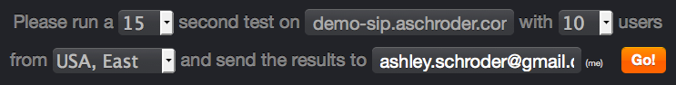
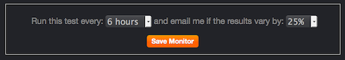
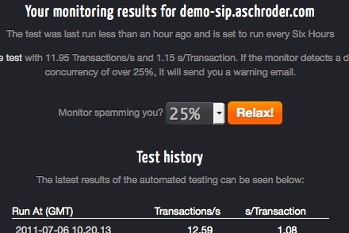
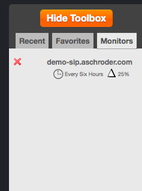

I snuck/sneaked out a new feature for MageSpeedTest.com last week: Performance Monitoring.
Basically it’s the same simple Magento performance test you know and love, run every 6, 12 or 24 hours. If the results of the regular tests differ by more than your preset tolerance, you get an email warning you – simple.
I wanted to soft launch it to a) try it myself in production for a while and b) get some tester feedback.
{kind=link}
So with positive results from both I am now officially announcing the new Magento Monitoring feature and inviting you all to try it for free!
Magento Monitoring is free?
Yes, that’s right. Paid up premium subscribers may monitor 5 stores, free members can monitor 1 store.
Why would I monitor my store?
I can think of two reasons;
1) Your sneaky web host starts overloading their servers and the performance of your store begins to degrade, this would allow you to a) be notified of it and b) show them empirical results when you log a support case.
2) Over the course of a store’s lifetime things change, new theme templates, new extensions and custom development. These can have an impact on performance, it’s better to find out as soon as they begin to manifest themselves. Jeff Atwood’s post on performance has a good point about making performance a pride point for developers. If no one keeps an eye on performance, the few hundred milliseconds here and there begin to add up over the course of a year.
I’m sure there’d be other good reasons to….
How to Monitor Your Store
Monitoring is based on the settings and results of a normal speed test. You can set it up in a minute with these 2 simple steps:
Step 1: Run a normal test
Run a normal test while you’re logged-in with a duration and concurrency that is suitable for your Magento store.
You do not have to be a premium subscriber to log-in, but you do have to log-in with a Google account because I use Google’s App Engine for user management.

Step 2: View your results
Once this has run, and you are happy with the results you can click the ‘Monitor this Server’ button on the results page.
You will be asked to choose how frequently the test runs, and what level of tolerance to accept, ranging from 25% through to 200% different.

A quick tip about choosing a representative test; the results you base the monitoring on should be a fair representation of your site’s normal performance. You should also choose a test that doesn’t break your server – you’re not trying to DOS yourself several times a day so if you can’t handle 100 concurrent users, don’t do it!
View the test results and make changes
A list of all your monitors in the toolbox. Once a monitor is running you can view a history of the recent results and edit the tolerance.

Stop monitoring
What if you don’t like it, or your server can’t cope? You can easily delete the monitor from the toolbox if you decide you don’t want it anymore. Simply click the little red X beside a monitor in the toolbox to delete it.

Feedback
If you have any thoughts on making this better, or just want to tell me what’s wrong with it, please don’t hesitate. I’m aiming for 1-2 releases per month on MageSpeedTest.com so if I can squeeze good ideas in, I will.
(Bonus for people who read all the way down here: I haven’t written the logic that reduces your monitoring count from 5 to 1 when you unsubscribe yet… do with that information what you will…)
your script is NOT a shop monitor.
you just take some urls from the sitemap, and meassure the response time – ab (apache benchmark) does the same.
anyway, a real shop monitor system will do much more – make test orders, report html/shop error messages and so on.
it’s a nice attemp, but if yo launch such a project – do it right!
Thanks for the feedback. I’m very transparent about how the testing works – it’s not supposed to tell you if your payment gateway is down, or your products are out of stock, it tells you if your site is running fast or slow. With the latest release or monitoring it now tells you if it’s running slower than it used to as well.
I am planning to develop an extension that will allow the stores to publish urls for testing performance of customer actions like creating an account, logging in/out and adding to cart.
Even with a server side extension publishing testable URL’s, the test will still only be looking at performance, if you have a bug in your add to cart code, MageSpeedTest.com is not the tool for finding it.
Hi Ashley,
Nice ideas, looking forward to the extension! I think you could do many things with that extension, like relating the number of sales to the speed of the website. Then it does become more of a shop monitor as mentioned by Patrick.
So, here’s my problem: I’m currently testing MageSpeedTest.com for my website https://www.hackmonitor.com, notice the https://. It seems that the version of siege you are using does not support HTTPS and requires re-compiling (Siege FAQ: Does siege support HTTPS protocol?. Is that something you might plan on doing? 😉
Thanks for this nice tool!
Sure Jeroen – I’ll fix it up in the next day or so and let you know when it’s ready, embarrassing oversight alert!
I think a good feature not to code, but for comparison, would be the description of rankings given i.e. the 1-5 ranks. (comparison chart of major websites and their volume vs magespeed test scores/data)
whats good, whats bad? whats the average trans/sec that different sites should have?
if i had say, 10,000 page views per month, where should i be in terms of ranking?
this would help site owners and admins to determine if their host is up to snuff, and may consider switching to one of the hosts linked at the bottom, which im sure you are getting some kind of referral for, and wouldn’t mind more of.
You may want to check out the new shoppimon app – dead simple simulated user monitoring for Magento. Still invite-only, but I’m sure they’ll give you one if you ask 🙂 http://www.shoppimon.com.
Nice looking app. Crikey! $50/month though? I’m working on add-to-cart, signup and search testing for magespeedtest.com, once that’s finished, I think it’ll represent pretty good value compared to this.